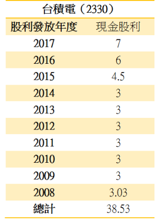

股市中沒有專家，只有贏家與輸家！
2017.03.09
同樣是買賣股票，為何有人賺錢，但是卻有人賠錢呢？究竟是哪一個因素決定你是贏家、還是輸家？在探討原因之前，先來輕鬆一點，講一個故事好了。 A與B兩位小姐相約到森林裡面旅遊，在欣賞風景、放鬆心情之際，遠方卻有一頭老虎飛奔了過來。A小姐立刻蹲下身子，用力將鞋帶綁緊；B小姐看到後顫抖的問她：「妳就算跑得再快，也跑不贏老虎吧？」A小姐回答了一句：「我只要跑贏妳就好了」，頭也不回的就飛奔了出去。想當然，老虎輕而易舉的抓住了B小姐，飽餐一頓之後，再也不管躲在遠方的A小姐，跑回去睡覺了。此時，A小姐慢慢的走回了B小姐身邊，除了讓她入土為安之外，順便把老虎不吃的iPhone手機、Tiffany鑽戒跟LV包包通通帶回家。
請問你，當老虎飛撲而至的時候，開始計算要跑多遠的距離、跑多快的時速有用嗎？當一個專家有用嗎？還是要當一個勝過輸家的贏家呢？同樣地，當大股災降臨之際（老虎），你是要當贏家？還是專家呢？
在股市中，區別贏家與輸家的關鍵就在於「成本」這兩個字。舉例來說，我存了20幾年的台積電，成本已經低到不可考，就當作是10元好了，假設小華在最近買進台積電，成本高達190元，一旦碰上國際股災，請問誰晚上睡得著覺呢？如果台積電因為股災跌到100元，此時小華一股賠掉了90元，但是我還是一股賺90元。就算是持有相同的股票，但是因為「成本」的不同，結果就是「贏家」與「輸家」的分野。
在股災崩盤時，輸家往往因為持股成本較高、心理壓力比較大，往往會不理性的殺出股票，不斷的賣壓就會造成股價的持續重挫；可是等到股價跌到迷人的價位時，贏家反而可以耐心低接輸家殺出來的股票，一旦輸家把手上的股票賣光，請問你股價還會再跌嗎？股票都換手到贏家的手上了，一旦景氣好轉，輸家又開始在市場上收購股票，贏家手上的股票也會一直的上漲。
成本就是決定勝敗的關鍵，但是要怎樣降低手上持股的成本呢？股神巴菲特說過一句名言：「如果你不想持有一支股票10年，那麼連10分鐘也不要持有。」為什麼是10年？一樣拿台積電來說明。假設小陳在2008年，買進一股60元的台積電，持有至2017年除息（只統計現金股利）之後，小陳總共可領到38.53元的現金，持股成本降為60-38.53＝21.47元，如下表所示： 
從上面的數據不難看出，長期持有好公司的股票，靠著每年的股利（現金+股票）就會不斷地降低你的持股成本，讓你越抱越安穩，這也是贏家最大的秘密。反觀一些股市投資人，平日汲汲營營於打聽消息、畫技術線型、研究財報…，努力讓自己當一個專家，然後頻繁的買賣進出，不斷的付出龐大的交易成本，結果是在不知不覺之中，讓自己變成了「輸家」。